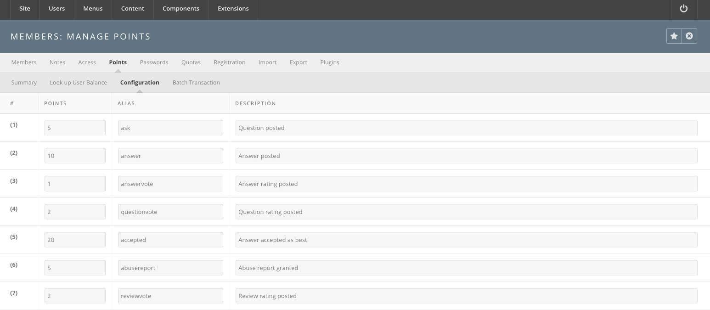

Hub managers
Members
The Members manager is where every account on the hub is created, edited,
confirmed, approved, blocked, exported and deleted. Open it under Users >
Members. It is com_members, and it owns most of what sits on the Users
menu.
The sub-menu
A row of links sits above every Members screen. Which links appear depends on
your permissions and on one configuration setting; the menu is built in
core/components/com_members/admin/helpers/members.php.
| Link | Opens | Shown when |
|---|---|---|
| Members | The account list. | Always. |
| Notes | Administrator notes about accounts, and their categories. | Always. |
| Access | Access groups and viewing levels. | Always. |
| Points | The points system. | Only when Bank Accounts is on in Options. |
| Passwords | Password rules and the password blacklist. | Only for a Super User (core.admin). |
| Quotas | Disk quotas, quota classes and quota import. | Always. |
| Registration | Which fields registration asks for. | Always. |
| Import | Bulk member import and import hooks. | Only for a Super User (core.admin). |
| Plugins | The hub's members plugins. |
Always. |
There is no Export link. Export is a toolbar button on the account list; see Exporting accounts.
The account list
The list opens on every account on the hub, newest registration first.
Filters
| Filter | Notes |
|---|---|
| Search | A number matches the account id exactly; anything else matches anywhere inside the name, username or email. Go submits, and Reset clears the filter bar. |
| - Email confirmed - | Confirmed or Unconfirmed. |
| Access | An access level. |
| - State - | Enabled or Disabled, that is, not blocked or blocked. |
| - Approved - | Unapproved, Manually approved or Automatically approved. |
| - Group - | An access group. |
| - Registration Date - | Today, the past week, month, three months, six months or year, or older than a year. |
Columns
| Column | Notes |
|---|---|
| ID | The account's numeric id. Sortable. |
| Name | Shown as surname, given name middle name, rebuilt from the full name when the parts are empty. Click it to edit the account. Sortable. |
| Username | Sortable. |
| Sortable. | |
| Access Groups | Every access group the account belongs to. |
| Status | The account's state, with a drop-down of the actions available from it. See Account states. |
| Registered | Sortable. |
| Last Visit | Never if the account has never logged in. Sortable. |
Toolbar
| Button | What it does |
|---|---|
| Options | The component's configuration. See the generated Members configuration reference. Super User only. |
| Profile | Opens the profile builder. See Building the profile form. Super User only. |
| Export | Downloads the accounts matching the current filters as CSV. Super User only. |
| Reset terms of use agreements for all users | See Resetting the terms of use. |
| Confirm / Unconfirm | Marks the checked accounts' email addresses confirmed or unconfirmed. |
| Block / Unblock | See Blocking an account. |
| New, Edit, Delete | Create, edit or delete accounts. Delete asks for confirmation first. |
| De-identify Members | See De-identifying members. Needs the Deidentify permission. |
| Help | The built-in help screen. |
Confirm, Unconfirm, Block, Unblock, Reset terms of use
agreements and the status drop-downs all require core.edit.state.
Account states
An account carries three separate flags, and the Status column shows the first one that applies.
| Status | Meaning | Actions offered |
|---|---|---|
| Blocked | block is set. The account cannot log in. |
Unblock |
| Incomplete (authenticator) | The account was started through a third-party authenticator and never finished. Its email address ends in @invalid. |
None |
| Unconfirmed | The email address has not been confirmed. | Confirm email, Resend confirmation, Block |
| Not Approved | Email confirmed, but the account still needs an administrator's approval. | Approve, Block |
| Approved | Email confirmed and account approved. This is a working account. | Unapprove, Block |
Confirmation and approval are two different gates. Which of them a new registration has to pass is set by New User Account Activation on the Options screen: None confirms the account outright, Self emails the user a confirmation link, and Admin emails the link and leaves the account unapproved until someone approves it. The System - Unconfirmed and System - Unapproved plugins are what hold such a user on a holding page until the gate is passed.
Confirming an account by hand
- Open Users > Members.
- Find the account.
- Either open its Status drop-down and choose Confirm email, or check the box beside it and press Confirm in the toolbar.
Resend confirmation on the same drop-down issues a fresh confirmation code and emails it again.
Approving an account
Open the account's Status drop-down and choose Approve. If Email On Account Activation is on in Options, approving also emails the user to say the account is ready.
Blocking an account
Blocking is the way to take an account out of service without deleting it — for a spam signup, or for someone who no longer wants an account. A blocked account can be unblocked later with nothing lost.
- Open Users > Members.
- Find the account.
- Either open its Status drop-down and choose Block, or check the box beside it and press Block in the toolbar.
You cannot block your own account.
Editing an account
Click a name in the list, or check it and press Edit. The record opens on six tabs; the last three appear only once the account exists, and plugins may add more.
| Tab | Contents |
|---|---|
| Account | Name, username, email, access groups, and the account's state flags. |
| Profile | The profile fields defined in the profile builder. |
| Password | The current password hash, a New Password field, the password rules, and the shadow values: Last changed on, Valid for (days), Warning at (days) and Expires on. Shown only with core.admin or core.edit. |
| Groups | The hub groups the account belongs to, as member or manager. |
| Hosts | The hosts the account may reach. |
| Messaging | The account's message delivery settings. |
Save with Save or Save & Close; Save & New saves and opens a blank record.
Resetting the terms of use
When the hub's terms of use change, every existing acceptance can be cleared so that users have to accept the new text.
- Open Users > Members.
- Press Reset terms of use agreements for all users in the toolbar.
- Log in to the site to confirm the acceptance prompt appears.
The button does two things: it clears the recorded agreement on every account, and it sets the TOU row's Update on Next Login column on the Registration screen to Required, which is what actually puts the prompt in front of the user.
De-identifying members
Available from release 2.2.26. De-identification strips personally
identifiable information from the database. Some rows are deleted outright;
elsewhere fields are emptied or replaced with generated values (anonUsername_
plus the account id) that cannot be mapped back. The account row itself
survives, blocked and anonymous, so that statistics stay intact.
- Open Users > Members and press Options. On the Permissions tab, set Deidentify to Allowed for the group that should hold it. Save and close.
- Check the accounts to de-identify in the list.
- Press De-identify Members in the toolbar — the eye icon next to the delete button.
- The list redraws with the anonymised values, and a success message names the accounts that were processed.
The work is done by the user.onUserDeidentify event. Three plugins listen for
it. User - HUBzero does most of it, clearing or deleting rows in the user
profile, support ticket, session and session geo, profile completion award,
newsletter mailing, message, media tracking, jobs, feedback, event
registration, blog entry and comment, cart, authentication link, group
membership, extended profile, wishlist and wiki attachment, quota log,
authentication log, password and password history, and points subscription
tables. User - Middleware anonymises the tool session, job, file
permission, view permission and view log tables in the middleware database.
User - Ldap re-syncs the directory entry.
What deleting a member removes
Deleting an account with the toolbar's Delete button is not the same as de-identifying it. Delete removes the account row and cascades through everything hung off it. This section replaces the older Members removal tech notes page.
Deleting needs core.delete on com_members, and refuses to remove a Super
User unless you are one yourself. For each checked account it calls destroy()
on the member model:
public function destroy()
{
$data = $this->toArray();
Event::trigger('user.onUserBeforeDelete', array($data));
// Remove profile fields
foreach ($this->profiles()->rows() as $field)
{
if (!$field->destroy())
{
$this->addError($field->getError());
return false;
}
}
// Remove notes
foreach ($this->notes()->rows() as $note)
{
if (!$note->destroy())
{
$this->addError($note->getError());
return false;
}
}
// Remove hosts
foreach ($this->hosts()->rows() as $host)
{
if (!$host->destroy())
{
$this->addError($host->getError());
return false;
}
}
// Remove tags
$this->tag('');
// Attempt to delete the record
$result = parent::destroy();
if ($result)
{
Event::trigger('user.onUserAfterDelete', array($data, true, $this->getError()));
}
return $result;
}
So the account's own profile field values, notes, hosts and tags go with it,
and the user.onUserAfterDelete event carries the deletion outward. Seven
plugins listen for it.
| Plugin | What it removes |
|---|---|
| User - Xusers | Hub group memberships, the extended profile, every authentication link, and the account's disk quota. Then fires members.onMemberAfterDelete for anything listening further out. |
| User - HUBzero | The account's sessions. |
| User - Middleware | Rows in #__users_quotas and #__users_tool_preferences. |
| User - Ldap | Re-syncs the directory, which removes the entry. |
| User - Geo | Removes the account from the hub group named in the plugin's group parameter, if one is set. |
| User - US | Removes the account from the location_us hub group. |
| User - D1 | Removes the account from the d1_nation hub group. |
Building the profile form
Profile in the account list toolbar opens the profile builder, which defines the fields that make up a member profile — the same fields the registration form and the account's Profile tab draw on. The form itself fills the page; a panel beside it carries two tabs, Add new field and Edit field.
Add new field lists the field types you can drag or click onto the form.
| Type | Renders as |
|---|---|
| Text | A single-line text box. |
| Paragraph | A multi-line text box. |
| Checkboxes | A list of options, any number selectable. |
| Multiple Choice | A list of options, one selectable. |
| Dropdown | A select box, one selectable. |
| Country | A select box of countries, filled in automatically. |
| Date / Time / Date/Time | A date, a time, or a full timestamp. |
| Number / Price / Range | Numeric inputs. |
| Email / Website | Text boxes for an address or a URL. |
| ORCID | A text box for an ORCID identifier. |
| Address | Street, city, region, postal code and country. |
| Tags | Keywords separated by commas or semicolons. |
| Hidden | A hidden input. |
| Section Break | A heading with no input, for grouping the form. |
Edit field configures the selected field: its Label, a longer description, its Viewing level, and the Required, Read only and Disabled checkboxes. Fields with options — Checkboxes, Multiple Choice, Dropdown — get a row per option with a label, an optional separate value, and a Dependent fields box naming the fields that should appear when that option is chosen.
Working in the builder:
- Add a field. Click or drag its type from Add new field, then fill in the label and options on Edit field.
- Duplicate a field. Hover the field and press the Duplicate Field icon.
- Remove a field. Hover the field and press the Remove Field icon.
- Reorder fields. Drag a field up or down.
The builder's toolbar has Save, Save & Close and Cancel only — there is no Save & New. Nothing is written until you save.
Notes
Notes manages the notes administrators keep about accounts — they are not something users write. A note has a subject, a body, a category, a review date and a state, and it hangs off one account.
Two links sit under the tab: User Notes, the list itself, and Note
Categories, which opens com_categories scoped to com_members.
Access
Access covers the two halves of the permission system.
Access Groups are the buckets permissions are granted to: Public, Manager, Administrator, Registered, Author, Editor, Publisher and Super Users by default, arranged as a tree. The Users in group column counts the accounts in each. To add one, press New, give it a Group Title, pick a Group Parent, and Save & Close.
Viewing Levels are the named levels content is tagged with. To add one, open the Viewing Levels link, press New, give it a Level Title, check the groups under Access Groups Having Viewing Access, and Save & Close.
See Access Groups and Access Levels.
Points
Points are the hub's internal currency, awarded for taking part. The Points link appears only when Bank Accounts is on in the component's Options.
Four sub-links:
- Summary — the top earners and how points were earned.
- Look up User Balance — a single account's balance.
- Configuration — the award table.
- Batch Transaction — deposit to or withdraw from many accounts at once.
The configuration screen is a table of fifty numbered rows, each with Points, Alias and Description. The alias is the key a component passes when it awards points, so the rows you fill in are the ones your hub's components actually use. A hub running the Answers component typically fills in these seven:
| Alias | Awarded for |
|---|---|
ask |
Posting a question. |
answer |
Posting an answer. |
questionvote |
Rating a question. |
answervote |
Rating an answer. |
accepted |
Having your answer accepted as the best one. |
abusereport |
An abuse report that an administrator upholds. |
reviewvote |
Rating a review. |
Fill in Points, Alias and Description on a row and press Save Configuration.

Passwords
Two sub-links.
Password Rules lists the rules a password must satisfy, with columns Id, Rule, Description, Ordering and Enabled. Opening a rule adds its Value, Failure message, Class and Group. The shipped set matches current security guidance and is meant to stay enabled.
Password Blacklist is a list of words that may not be used as passwords — somewhere to put obvious choices and words specific to your hub. To add one:
- Open Users > Members > Passwords, then Password Blacklist.
- Press New.
- Type the word in the Word box.
- Save & Close.
Quotas
Three sub-links, and they only matter when Manage Quotas is on in Options.
Member disk quotas lists accounts and their quotas. To change one, find the account, open it, change its quota class or its individual limits, and Save & Close.
Quota classes are reusable sets of limits. Press New and fill in:
| Field | Notes |
|---|---|
| Alias | The class's short name. |
| Soft blocks limit | Soft limit on disk blocks. |
| Hard blocks limit | Hard limit on disk blocks. |
| Soft files limit | Soft limit on file count. |
| Hard files limit | Hard limit on file count. |
| User Access Groups | Access groups whose members get this class automatically. |
Import quotas seeds the tables from the filesystem. Paste the contents of a
quota.conf file into the Conf file box, tick Overwrite matching
existing entries? if you want existing rows replaced, and press Import.
Accounts named in the file that have no quota row yet are listed underneath so
you can import them in a second pass.
Registration
Registration controls which fields the hub asks for, and when. It has three sub-links: Config, Incremental Registration and PREMIS Data Import. See Registration.
Import
Import bulk-creates and bulk-updates accounts from a data file, and manages the hooks that can transform records on the way in. Super User only. See Member import.
Exporting accounts
Export in the account list toolbar downloads a CSV of accounts. Two things about it are worth knowing:
- It exports the accounts matching the filters currently applied to the list, not always every account. Clear the filters first if you want the whole hub.
- The columns are generated from the accounts table plus every field in the profile builder, so the file's shape follows your hub's profile schema. Passwords are never included.
The download is served as members.csv.
Plugins
Plugins lists the hub's members plugins. It is a screen of its own, not
the Plugin Manager, though it works the same way. These plugins are what put
the tabs on a member's public profile and the panels on the member dashboard,
so publishing and unpublishing them is how you decide what the member area
contains.
To publish or unpublish: check the plugin, press Publish or Unpublish,
and the Status column changes. Reordering needs core.edit.state on
com_plugins.
The Members - Dashboard plugin has a Manage link in its own column, which opens the default dashboard layout:
- Drag modules to move them; drag the lower-right corner to resize.
- Add Modules adds one to the layout.
- Push Module to Users puts one module onto existing members' dashboards. Fill in the module, column, position, width and height, then press Push Module.
Changes are saved as they are made and apply to members who have not yet rearranged their own dashboard.
Members removal tech notes
This page used to hold pasted excerpts of the code that runs when a member is deleted. That material now lives in the Members manager chapter, checked against the current source and with the plugin cascade written out:
Two neighbouring sections cover the operations people usually mean when they ask about removing a member:
- Blocking an account — take an account out of service without losing anything.
- De-identifying members — strip personally identifiable information but keep the account row.
Rewritten and checked against 2.4-main @ 123ea53b14 on 2026-09-09.